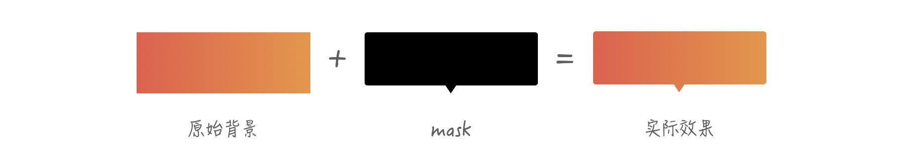
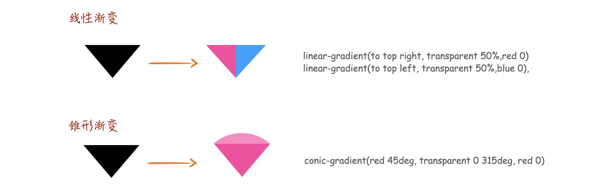

常见tooltips实现方式:https://codepen.io/xboxyan/pen/MLJjWQ
文章链接:https://juejin.cn/post/6971261516284690468
clip-path 可能很多人马上就能想到的方式,但是实际操作下来,还是会遇到很多麻烦
如何解决这个问题? 其实把2 和 3 结合起来就可以了
这里需要两个相同大小的容器,可以用::before 和 ::after 来代替,然后设置相同 的背景色,可以通过自动以属性定义
为什么要用两个相同大小的容器呢? 这是为了保证接下来渐变背景在裁剪时完全吻合
接着其中一个裁剪成圆角矩形,另外一个裁剪成小三角,然后 重叠 起来就可以了
除了clip-path,mask 也是一种思路,如果还不熟悉mask,可以参考文章(https://juejin.cn/post/6846687594693001223), 原理如下
利用mask,现在的问题就转变成了: 如何通过 CSS 绘制这样一个图形?
没有什么图形是 CSS 渐变 绘制不出来的,首先把这个图形进行分解,这里可以分成一个圆角矩形和一个 三角形,三角形比较容易,可以通过 conic-gradient 或者 linear-gradient 绘制
圆角矩形就稍微有点麻烦了,不过还是可以分解的,如下
可以由4个径向渐变和2个线性渐变合成,用代码实现就是
只要有耐心,都可以很顺利的写出来
But,太长了,有很多重复的(4个radial-gradient),非常啰嗦,有没有什么办法优化呢? 这里有个技巧,碰到重复有 规律的东西,可以多想想 repeat, 利用背景的平铺特性,合理设置背景尺寸就可以了,如下:
可以看到,背景尺寸设置成 calc(100% - 10px)就可以达到平铺效果